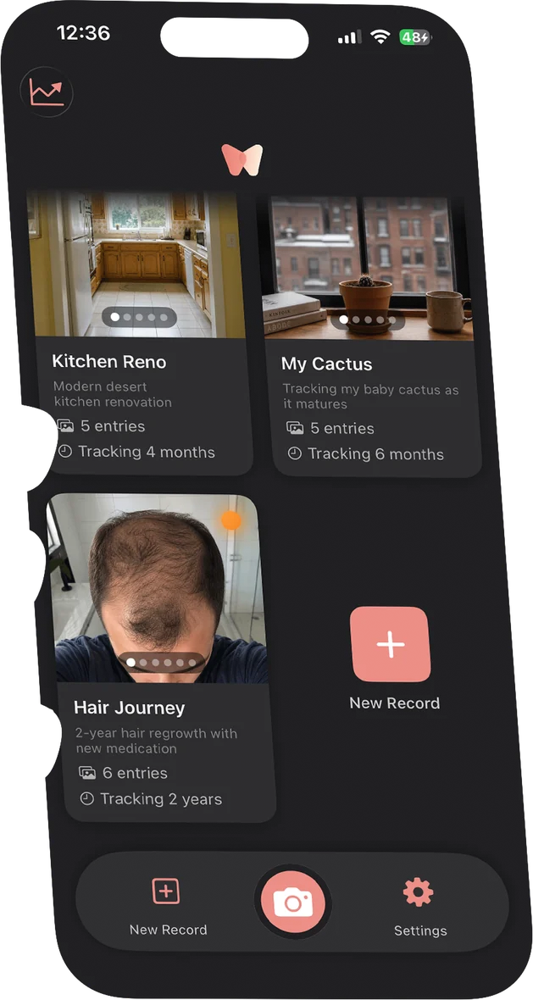
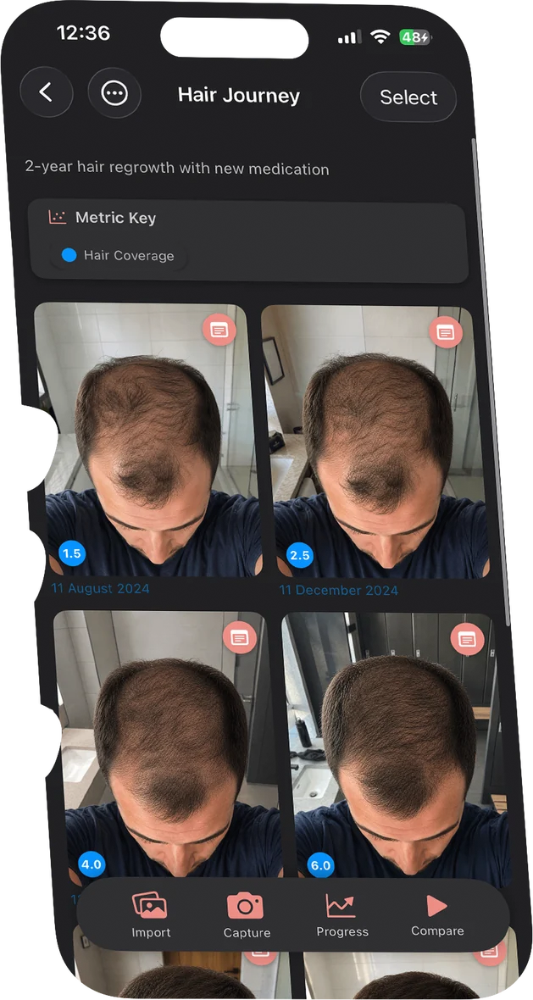
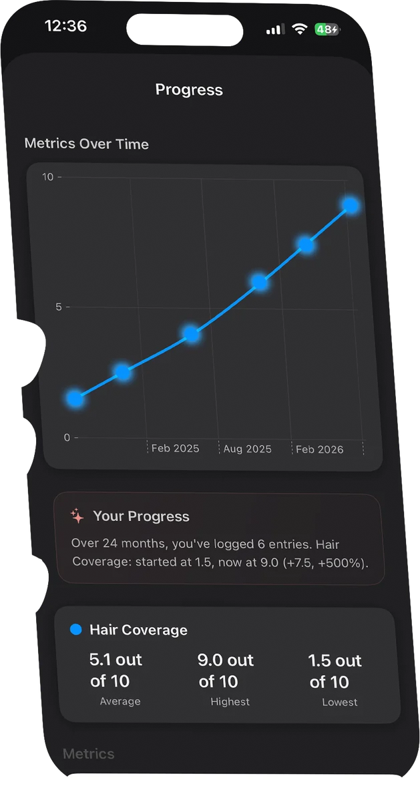
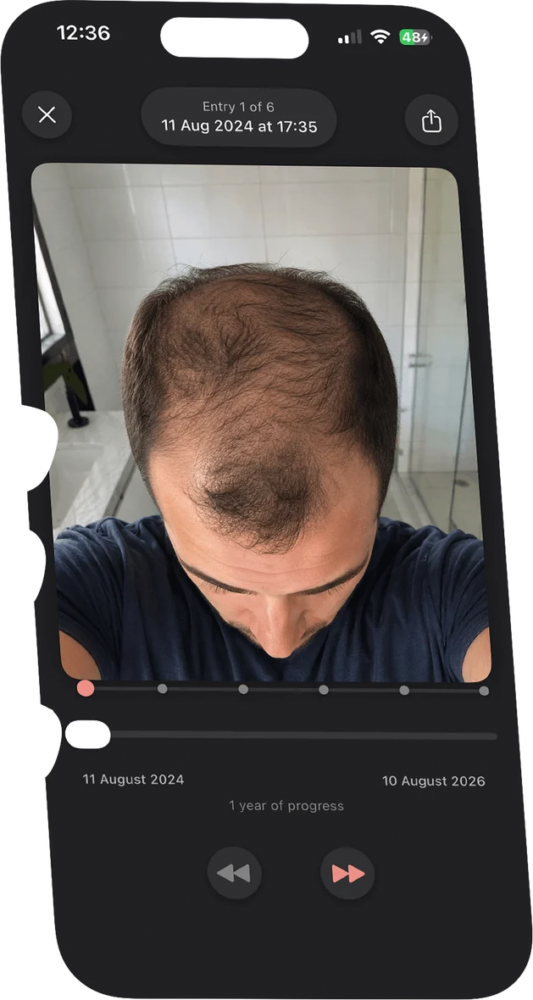
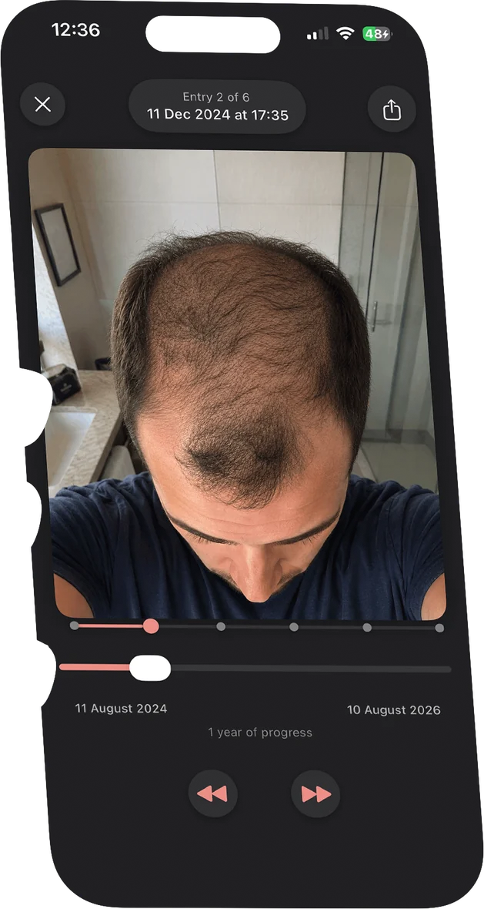
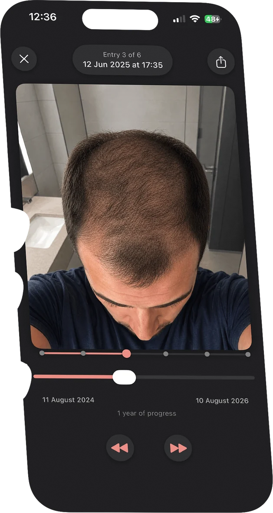
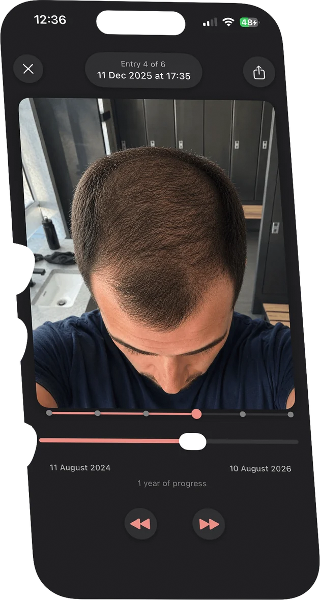
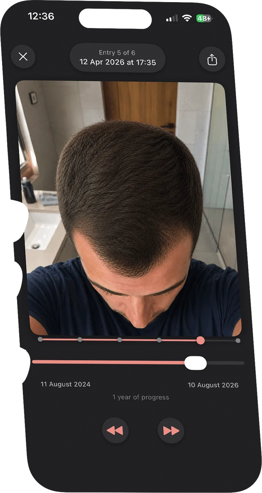
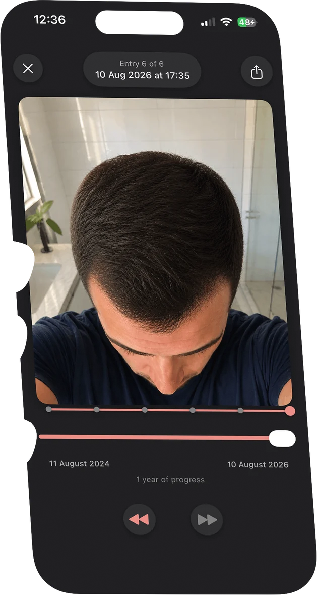

WTNS: the iOS app for capturing & tracking change.
Track anything that transforms over time, one perfectly aligned photo at a time. Some changes happen slowly; that's exactly why they're worth capturing.
No account needed. Everything stays on your device.








